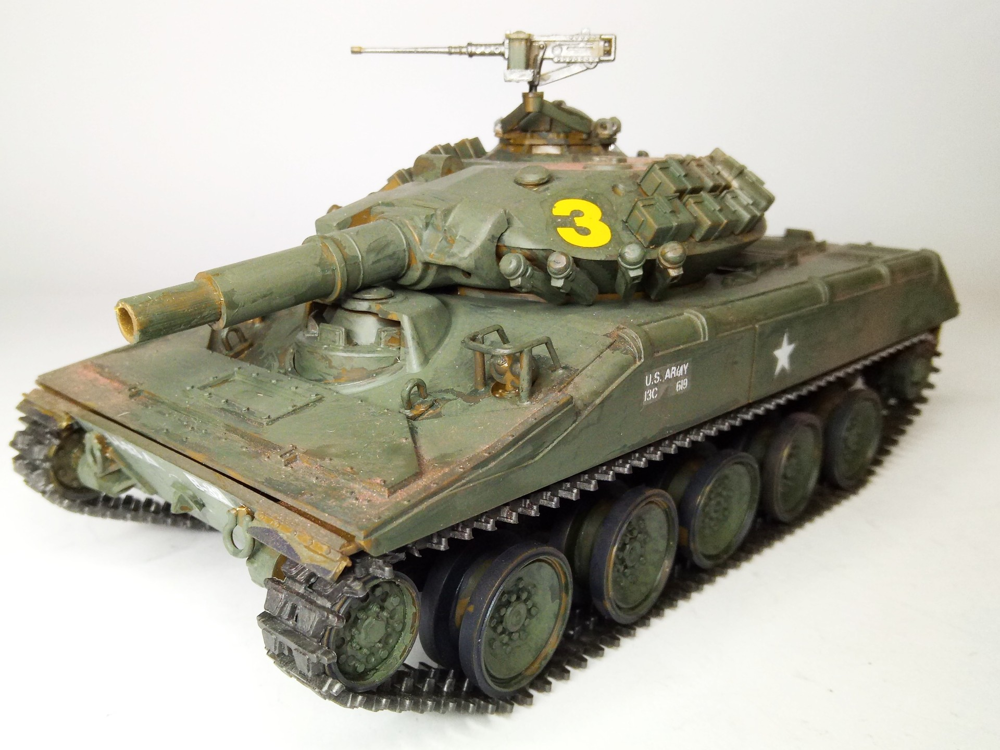
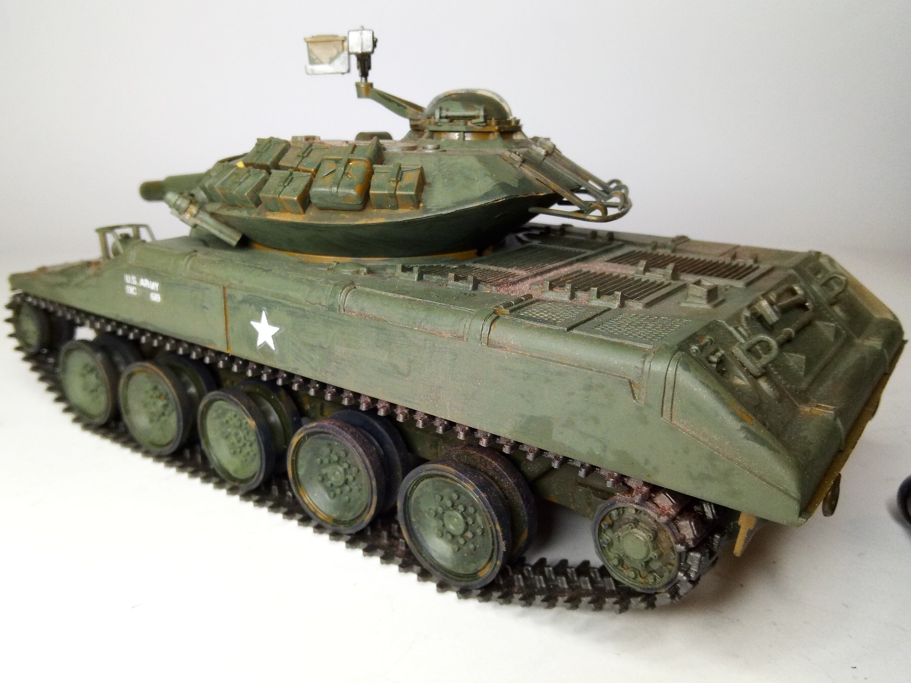

Mezzi militari · scale model archive
M551 Sheridan Tank
M551 Sheridan Tank — Kit: Tamiya, Scale: 1/35. More on: https://www.youtube.com/watch?v=EWhYSuO_F64&ab_channel=DEVGRU5022 #1/35 #Tamiya #Sheridan

Photo gallery

English description
More on: https://www.youtube.com/watch?v=EWhYSuO_F64&ab_channel=DEVGRU5022
#1/35 #Tamiya #Sheridan
Descrizione italiana
Maggiori informazioni: https://www.youtube.com/watch?v=EWhYSuO_F64&ab_channel=DEVGRU5022